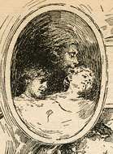
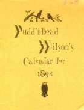
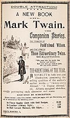
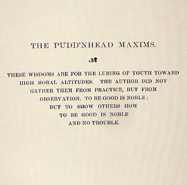
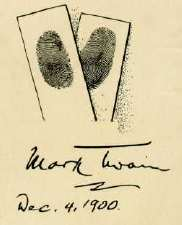

|

MT, whose need for cash at this time far outweighed any
lingering misgivings he may have had about publishing his
work in advance of the subscription canvas, sold the rights
to the complete novel to The Century Magazine for
$6500. The magazine brought the story out in seven monthly
installments, from December 1893, to June 1894, with illustrations by
staff artist Louis Loeb.
As
MT said in letters to his family in Europe, the
installments attracted a good bit of other attention, which you can explore by clicking here: |
|

As a promotional gimic, The
Century Magazine put together a pocket calendar for
1894, "set up for Mr. Wilson" by "Henry Butts of Dawson's
Landing". The tiny pamphlet featured one of
Pudd'nhead's ironic aphorisms for each month in the year
and a brief
account of fingerprints taken from the novel. The giveaway
was widely advertised, and enough
copies must have been given away to require a reprinting,
because two slightly different versions of the Calendar are
in the Barrett Collection. At the end of one is a "photograph of Mark
Twain" taken by "David Wilson" himself. At the end of
the other is a
blurb telling readers about the fun and thrills they'll find
in this latest of "Mark Twain's romances." In his biography of MT, Albert Bigelow
Paine, who was 33 in 1894 and so is presumably speaking
from his own experience, attests the success of both the
book and the gimic: "The Century had issued a tiny
calendar of the Pudd'nhead maxims, and these quaint bits of
philosophy...were in everybody's mouth." We can say for certain
that maxims from the calendar were quoted in many different periodicals, as you can explore by clicking here: THE COMPLETE CALENDAR |
|
 Like all MT's books, Pudd'nhead Wilson was first published "by subscription," which meant that you didn't buy it in a bookstore, but from a book agent who went door-to-door with a sample of the book for you to look at and "subscribe" to -- which meant entering into an agreement to buy the book itself at a later date. The entire prospectus the agent carried is available elsewhere in the MT archive. It contains 61 pages from the novel, and four pages of promotional material. Those last four also belong here. |
|

Pudd'nhead Wilson's New
Calendar -- MT came back to Pudd'nhead and his homespun
ironies a few years later, when he used more of these
maxims as chapter epigraphs in Following the Equator
(1897). He came back to Pudd'nhead in this way in part,
obviously, because he hoped to continue to promote the
novel, and in part because of the popular attention the
first batch of Pudd'nhead's sayings had received. But
whatever boundary had separated Sam Clemens' experience
from Pudd'nhead's voice is even more permeable now: it is
harder than ever to attribute what Wilson says in these
"new" aphorisms with his character as it is developed in
the novel. So it makes sense to think of the "Pudd'nhead"
role as another of the disguises (like "Mark Twain" itself)
Clemens found useful as a rhetorical resource. |
|
 Although Pudd'nhead Wilson was never among MT's best-selling books, the connection between "Mark Twain" and the persona of "Pudd'nhead" remained vivid in his contemporaries' minds. Six years after the book appeared the Aldine Association threw a lavish dinner for MT. The whole of the elaborately designed and printed souvenir menu can be seen in MT ON STAGE, but at left is the icon from the menu's back page, which picks up the fingerprint motif from the novel. |